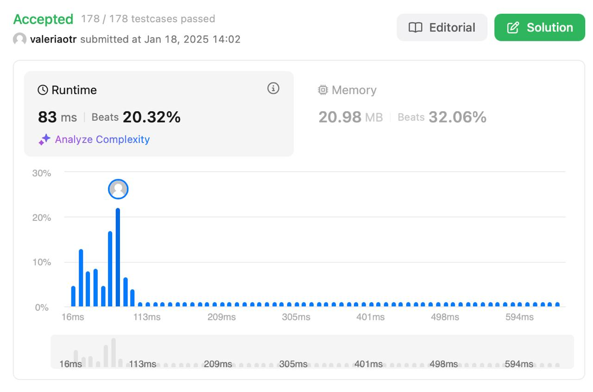

First Missing Positive
Level: Hard
Description
Given an unsorted integer array nums, return the smallest positive integer that is not present in nums.
You must implement an algorithm that runs in (O(n)) time and uses (O(1)) auxiliary space.
Example 1:
Input:
nums = [1,2,0]
Output:
3
Explanation:
The numbers in the range [1,2] are all in the array.
Example 2:
Input:
nums = [3,4,-1,1]
Output:
2
Explanation: 1 is in the array but 2 is missing.
Example 3:
Input:
nums = [7,8,9,11,12]
Output:
1
Explanation:
The smallest positive integer 1 is missing.
Constraints:
1 <= nums.length <= 10^5-2^{31} <= nums[i] <= 2^{31} - 1
Solution
Решение использует замену и пометку элементов массива для эффективного нахождения отсутствующего числа:
Основные шаги:
- Замена недействительных чисел:
-
Все числа, которые не могут быть частью ответа (например, отрицательные, ноль или превышающие длину массива), заменяются на (n+1).
-
Пометка присутствующих чисел:
-
Индексы массива используются для пометки присутствующих чисел путём изменения знака числа на отрицательный.
-
Поиск отсутствующего числа:
- Первый индекс с положительным значением указывает на отсутствующее число.
Примечания:
- Решение работает за (O(n)) времени и использует (O(1)) дополнительной памяти.
- Используется подход с заменой элементов массива для уменьшения памяти.
Result
